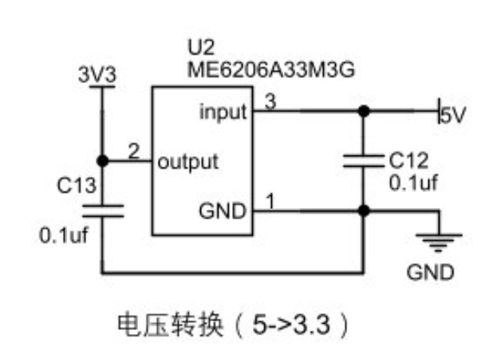
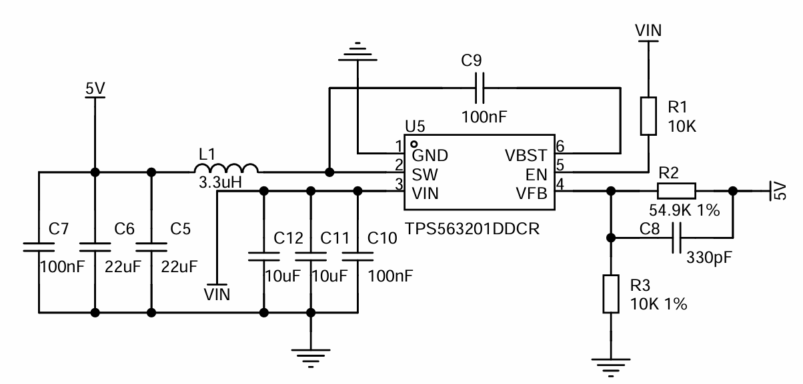
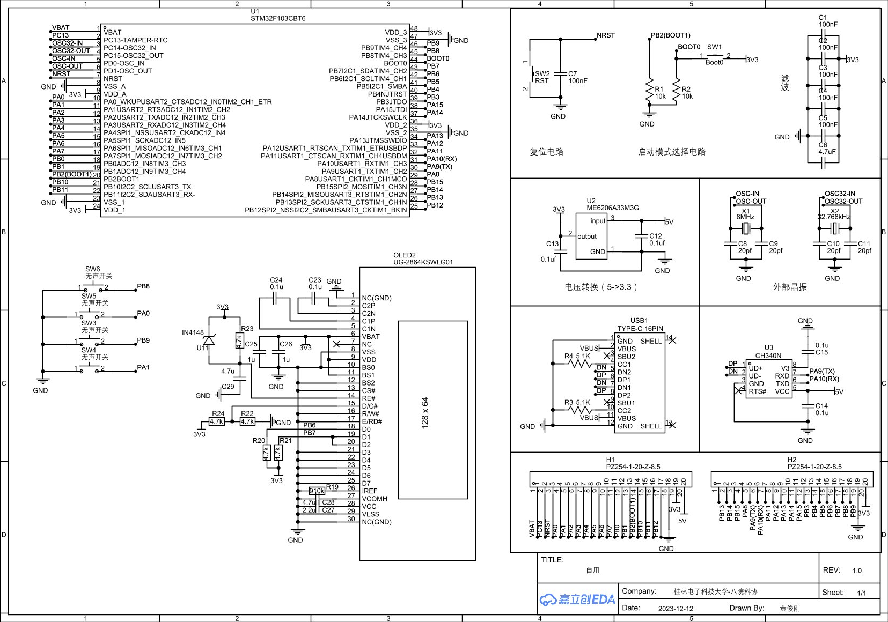
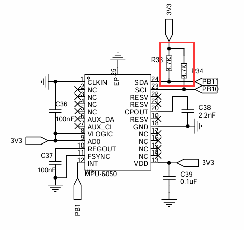

PCB制图|基础
常用电路组成
去耦电容
所谓的耦是是指耦合，由于线路导线存在寄生电阻与寄生电感，当不同芯片取电导致线路电流大小变化时，会导致电压产生波动即不再纯净，这就是不同芯片之间耦合出来的干扰，所谓去耦电容就是就是去除这些干扰，通常的选值为0.1uf，且由于去耦半径的存在，这颗电容距离芯片端越近越好，主要的目的是滤除来自于芯片的高频噪声（芯片本身由于内部晶体管导通关断产生的交流噪声耦合到电源上）。

旁路电容
除了上述提到的去除高频噪声外，还有低频噪声需要滤除，但不同的是：高频噪声一般来自于芯片，而低频噪声一般来自于电源芯片即外部，所以一般遵循“越近越小”即越靠近芯片滤波电容越小，先滤低频噪声再滤高频噪声。另外，除了滤波，还有稳压的作用，如果后级负载变化，靠电源输出的瞬态响应是不够的，要先放电容的电。

禁止滤波与无效滤波
禁止滤波是指：在设置基准电压的时候，比如tl431，由于其内部有运放反馈环路，外部电容负载大了会导致环路不稳定发生振荡（电容的自谐振频率可以看厂商提供的并联S21图或者自己用阻抗分析仪测量，自谐振频率除了容值还跟封装、电介质材料有关）。
无效滤波是指：电源接出来的过孔在mcu和退耦电容之间，mcu电流没有经过退耦电容再到总网，这时候就是一种无效滤波，直接通过过孔干扰回去了，强调：高频噪声主要来自于mcu。另一种就是频率不对，比如说是用的100Mhz的晶振，对于0.1uf的0805电容来说就是高频信号，滤不掉，这时候就要用差不多1nf的电容来滤波，0.1uf只能到15Mhz左右，50mhz以内用0.01uf这样。
运算放大器
基本分析方法
- 虚短：在运放处于深度负反馈时会出现虚短现象，使两个输入端的电位相等，就好像两个输入端短接到了一起，可以近似为V+=V−。
- 虚断：给运放的输入端加一个电压，然后测量该输入端的电流会发现电流读数接近为0，感觉运放内部断开，没有电流流入一样，但实际又是连接的，这种现象称为虚断。
电压跟随器
运算放大器的特性：
- 高输入阻抗:运算放大器的输入端（特别是非反相输入端）设计为具有非常高的输入阻抗，通常在几百千欧姆到几兆欧姆的范围内。这意味着当信号源连接到电压跟随器的输入端时，几乎不会有电流从信号源流入运算放大器，从而减少了对信号源的负载影响。（保护信号源：高输入阻抗使得电压跟随器可以直接连接到高阻抗的信号源而不会显著改变信号源的输出电压，因为它不会从信号源抽取显著的电流）
- 低输出阻抗
输出驱动能力：运算放大器的输出端设计为具有很强的驱动能力，这通常表现为低输出阻抗，一般在几十欧姆以下。这意味着电压跟随器可以有效地驱动后续电路（如另一个放大器的输入、ADC（模数转换器）或其他负载）而不会因为负载变化导致输出电压变化。(低输出阻抗有助于保持输出电压稳定，即使外部负载发生变化，也能确保输出电压不会受到显著影响)比例放大电路
阻抗匹配
阻抗匹配描述的是前后级网络传输效率最大化的情况。主要在运放的前后级、天线的设计上会考虑到。
绘制MCU最小系统板
stm32f1c8t6
主要注意：
- Type-c的CC1、CC2一定要5.1K电阻分别下拉至GND，否则会导致设备识别不正常，供电设备拒绝供电，不支持CtoC线等问题。
- 复位引脚NRST按键并联一个电容的目的：NRST内部上拉至3.3V，上电时电容充电，电位被下拉至GND，从而实现上电自动复位。本例中使用100nf的电容
ESP32-S3
主要注意： - EN引脚一定要加上延迟阻容，否则可能导致ESP32无法正常启动。
一些通讯电路
IIC
根据IIC的设计理念，SCL、SDA应进行上拉，而关于上拉电阻的选值，如果太小那么在芯片下拉时会导致电流过大，严重时会烧毁IO的MOS管；太大的话由于IO口总是对地有一定的寄生电容，上拉电阻过大，充电电流过小，可能会导致波形失真通讯失败。一般可选择4.7kΩ，随着总线设备的增加可适当减小上拉电阻。

SPI
SPI则没有什么特别的要求，但由于其高速的特性（可达80M）走线应注意等长，不要直角。
简易数字示波器|电路分析
元器件选型
电阻：阻值、封装、功率、精度
电容：容值、耐压值
前端模拟电路
- 交直流耦合切换电路
交流耦合即利用电容隔直通交的特性，去除直流分量；直流耦合就是不对信号做任何处理。
隔直电容的选型：理想状态下隔直电容应该越大越好，但由于电容越大其自谐振频率越低，输入信号低于电容自谐振频率时电容呈容性，高于自谐振频率时呈感性。我们需要呈容性，一般fc=fo/5，100nf时候有4M，如输入频率更高，可选用更小的容值。 - 输入信号衰减电路
- 信号调理电路